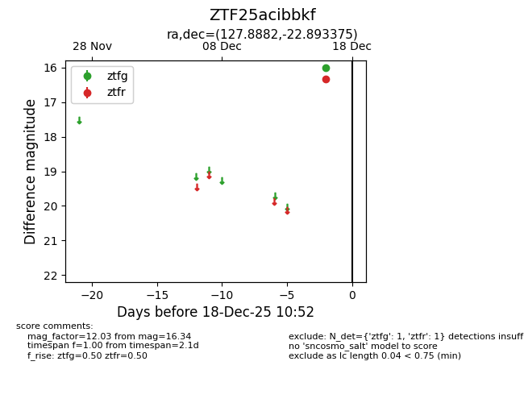
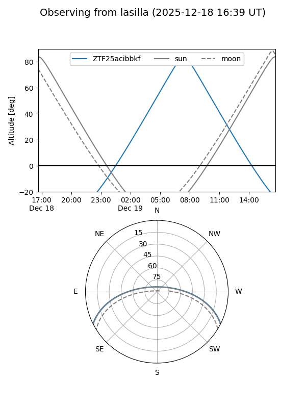
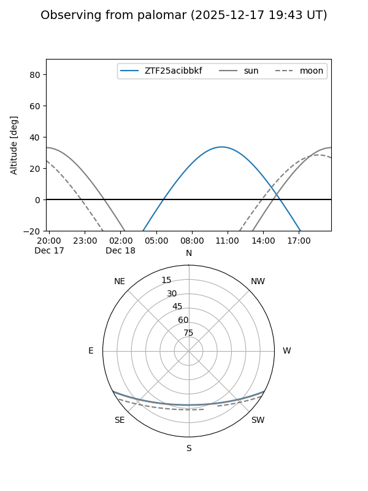

ZTF25acibbkf
Target ZTF25acibbkf at 2025-12-18 13:12
Aliases and brokers:
FINK: fink-portal.org/ZTF25acibbkf
Lasair: lasair-ztf.lsst.ac.uk/objects/ZTF25acibbkf
ALeRCE: alerce.online/object/ZTF25acibbkf
alt names
ZTF25acibbkf (ztf,fink_ztf)
Coordinates:
equatorial (ra, dec) = 127.8882,-22.89338
equatorial (HMS+DMS) = 08:31:33.16,-22:53:36.15
galactic (l, b) = (245.0476,+9.75784)
Photometry
last atlasc=15.83, atlaso=16.81, ztfg=16.00, ztfr=17.89
1 atlasc, 2 atlaso, 1 ztfg, 2 ztfr detections
Lightcurve

Visibility


Additional plots